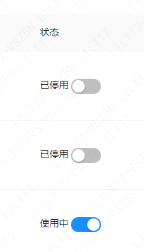
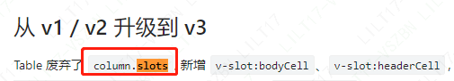
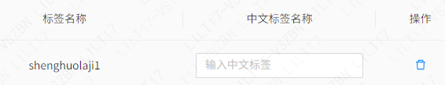

antd table中的伪双向绑定
一、需求说明

二、解决方案
首先梳理下如何在 antd table 中插入 switch 组件
v-slot:bodyCell(如同 v-bind: 可缩写为:一样，v-slot:可缩写为#)
官方例子：
1
2
3
4
5
6
7
8
9
10
11
12
13
14
15<!--
column指列，record指行，语义化下面的代码就是
【如果本单元格的表头key为tag，那么数值为行对象的tags】
-->
<template #bodyCell="{ column, record }">
<template v-if="column.key === 'tags'">
<span>
<a-tag v-for="tag in record.tags" :key="tag">
{{ tag }}
</a-tag>
</span>
</template>
</template>
{ title: 'Tags', key: 'tags', dataIndex: 'tags'}column.slots

官网表示废弃了这种用法，但是没办法，项目里还是 v2 版本，牵一发而动全身，所以选择找到 v2 版本的文档
官方例子：
1
2
3
4
5
6
7
8
9
10
11
12
13
14
15
16
17
18
19
20
21
22
23
24
25
26
27
28
29
30
31
32
33
34
35
36
37
38
39
<template #tags="{ text: tags }">
<span>
<a-tag
v-for="tag in tags"
:key="tag"
>
{{ tag}}
</a-tag>
</span>
</template>
{
title: 'Tags',
key: 'tags',
dataIndex: 'tags',
slots: { customRender: 'tags' },
},
//项目里是类似这种用法：
<template #tags="{ text }">
<span>
<a-tag
v-for="tag in text.tags"
:key="tag"
>
{{ tag}}
</a-tag>
</span>
</template>
{
title: 'Tags',
key: 'tags',
// dataIndex: 'tags', 统一不指定dataIndex，那么text其实就是record
slots: { customRender: 'tags' },
},好了现在来看怎么实现伪双向绑定
官网给的 switch 组件的例子是
v-model:checked，因为它是数据录入组件，所以是数据双向绑定，而此处改为:checked，这样后面其实是一个值为 boolean 的表达式，而不是
单一的与 switch 绑定的变量，此时点击 switch 组件，不会给出变动反应所以我们要结合@change 方法，把改动告诉给后端，后端动数据，成功后再次请求列表，此时数据就真正动了
1 | |
虽然经常忘记 v-bind:和 v-model: 的区别，但还是要一遍一遍记住才行，v-bind:是单项数据绑定，他的缩写是:，而 v-model: 本身就是 v-mode:value 的缩写，一般不会再缩写，
但也有个例外，input 组件里的 v-model:value 可以缩写为:value（注意不是:）
v-bind 数据只能从 data 流向页面，可以给任何属性赋值v-model 只能给表单类，也就是具有 value 属性的元素进行数据双向绑定，如 text、radio、checkbox、selected（这些属性其实都属于 value）。
三、拓展–antd table 中真正的双向绑定
虽然 antd 对 table 的定位是数据展示而不是数据录入，但需求不会跟着定位走

1
2
3
4
5
6
7
8
9
10
11
12
13
14
15
16<a-table rowKey="id" :columns="columns" :data-source="dataSource">
<template #input="{ record }">
<a-input v-model:value="record.asTitle" placeholder="输入中文标签" />
</template>
</a-table>
{
title: '中文标签名称',
dataIndex: 'asTitle',
align: 'center',
slots: { customRender: 'input' },
width: 100,
},
填写完后dataSource的数据会随之而变，此时再把dataSource传给后端即可，其实这里也能用上面那种伪绑定的方法，
但细想，伪绑定不能实时触发，就会造成交互特别奇怪，而且input组件的触发频率也会导致性能的消耗